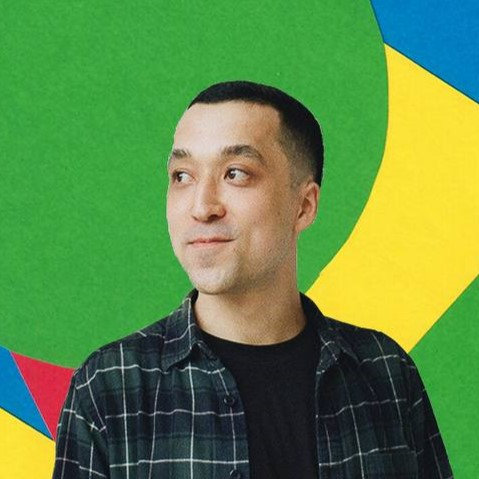

Lari Basangov
MSc Computer Science'23
University of Birmingham
University of Birmingham


I enjoy making games, programming, and learning new things. Comfortable with Unity, getting familiar with C++ and other engines.
Programming languages
- C# (Unity) - experience in 3 game jams, and personal projects.
- C++ - currently learning, have a small project made with SFML.
- Java - language that introduced me to OOP, and Full-Stack Application Development.
Game Engines
- Unity- comfortable with the engine, and tools like Cinemachine, Input System. Familiar with Netcode for GameObjects.
- Unreal Engine - currently learning, know the layout and the basics of Blueprints.
- ZDoom ACS, ZScript - comfortable with ACS scripting, familiar with ZScript. If for some reason, you want to make a game in GZDoom, I could countribute!
Other tools
- Version Control with Git LFS
- Adobe Photoshop
- PuTTy, WinSCP
- Ultimate Doom Builder
BirminDoom
November 2022 - February 2023, March 2024 - now
My role: Project Lead, Level Designer
This is a Doom II annual community project that I lead. Naturally, BirminDoom is experimental in nature, and this year's iteration aims to seriously change original Doom's formula, so I expect a lot of work with ZScript.
BirminDoom 2023: my contributions:
- Hub map for levels (implementation + concept)
- MAP01: Another Emergency
- Feedback / Game Testing
- Additional programming: scripting
Some takeaways:
- Used scripting to affect gameplay in my map: took away weapons from the player, teleported enemies, etc.
- Learnt a lot about how to give feedback in a supportive manner. it helped some maps to be clearer with their intentions.
- The project is powered by David Newton's RAMPART, so I got some experience reading code made by someone else.
Crunchy Wants Cake
Global Game Jam 2024 (January 26-28, 2024)
My role: Programmer, Audio Design
Tech used: Unity, C#
In this project, I handled technical aspects, from setting up a version control with Git LFS to making some major architecture decisions. I went with the following solution:
- Isolated reading input and passing it to other scripts with a Singleton class Controls. Initially, we had different kinds of input, and it was important to have this functionality within a single script.
- a Singleton class StateManager stored references to gameObjects of the separate game states, and a method that disables the current game state and enables a new one.
- Each state had its own gameObject. It also made referencing in editor much easier.
- Each state class in a C# script inherited from an abstract BaseState class that allowed for overriding Start() and Update() methods.
Can't Touch This!
January 2024
My role: Game Designer, Level Designer, Programmer
Tech used: Unity, C#
- Based on ‘The World’s Hardest Game’ by Stephen Critoph
- I have ‘reversed-engineered’ the game logic (traps, level progression, player controller, etc.).
- Created three own levels, and recreated one from game (with my positioning of keys).
- First time dealing with transfering the data from one scene to another.
- Tried designing code for scalability: added new type of trap movement, ensured that adding levels does not require too much workarounds in code
- Designing for difficulty was fun (it took me more than 100 tries to get through level 3).
Bubble Clicker
February 2024
My role: Game Designer, Programmer
Tech used: C++, SFML
Having learnt the basics of SFML and C++, I tried to make my own small game from scratch. I decided to make a small clicker, where the player is to click as many bubbles as they can within a time limit of 30 seconds. In this small project I dealt on my own with:
- Alignment of sprites and text using code (though implementation was in SFML, the concepts can be well translated into game engines).
- Adding a timer countdown that is properly displayed in game.
- C++11 Random Number Generation.
- How and when should the program generate random positions for bubbles. 100 positions are calculated at the start-up, and stored in a std::vector. The game goes through a vector one by one, whenever the bubble is popped.
- Changing states (the game screen and game related UI are not shown, while not in game session).
- Making game replayable in one session (where and how to reset variables so that the game can be replayed without any exceptions).
Apart from code organization, certain features can be introduced or fixed:
- Better randomization of positions.
- Simple animation to show a successful click.
- Randomize bubble's radius within a defined range.
- Introduce power-ups (e.g. time limit extension).
- Make more bubbles appear on screen and add a lifetime to them.
TechSurvival
June - September 2023
My role: Game Designer, Programmer
Tech used: Unity, C#, Unity Netcode for GameObjects
- Top-down 2D shooter that allows cooperative play with up to 4 players.
- Client-Server Architecture is implemented using Netcode for GameObjects.
The project is based on Nathan Farrer’s Unity Multiplayer course. My contribution is that instead of the PvP, I created a co-op game where players compete against swarms of enemies. Hence, all the logic around enemies (spawning, their movement, damage) and scores (with leaderboard that can be toggled) are made by me. Also, the course had tanks as avatar, and the movement needed to be adjusted for a humanoid cyborg. These changes also needed to account for client-server architecture
- The project started when I had very little experience with Unity, therefore, I feel like it is too far away from being good, but I learnt a lot about the necessity of a well-designed codebase.
- I also learned about the concepts related to netcode, and networking in games.